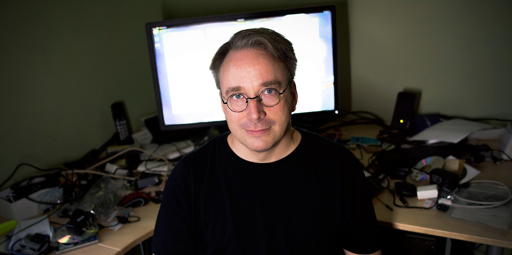

Лінус Бенедікт Торвальдс

Лінус народився у шведській родині, прізвище якої спершу звучало, як Торвальд, однак, його дідусь, поет Олє Торвальдс вирішив змінити його на Торвальдс, щоб надати йому «більш фінського забарвлення». Матір — Анна Торвальдс, журналістка; батько — Нільс Торвальдс. Обидва його батьки були радикалами кампусу в університеті Хельсінкі в 1960-х. Лінус навчався в Гельсінському університеті у 1988—1996 роках, закінчивши його у ступіні магістра комп'ютерних наук. У 1990 він придбав IBM PC з мікропроцесором Intel 80386 і почав працювати над розробкою ядра операційної системи Лінукс, на що його надихнула інша система — Minix. Одружений на Туве Торвальдс, 6-тиразовій чемпіонці Фінляндії з карате. Вони познайомилися у 1993 році і мають трьох доньок. З 1997 по 2003 роки Торвальдс працював у Сан Хосе, Каліфорнія на компанію Transmeta. З 2003 року почав працювати для OSDL зі свого дому у Сан Хосе. У червні 2004, Торвальдс переїхав у Портланд, Орегон, щоб працювати для OSDL в Бівертон, Орегон головним архітектором Лінукса..